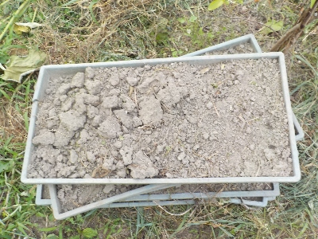

遊びで植物を育てよう
2024/08/18
草の根マルチは断念しました。

うまくいきませんでした。
稲みたいに種を均一に蒔くわけじゃないので、雑草が生えそろわなかったです。
土が薄いので、水やりしないと水不足で枯れます。
手間暇使って雑草を育てるより、草抜き草刈りをした方が楽だと思いました。
稲の苗トレイの下には草が生えなかったので、雑草無しの苗トレイだけで十分な気がしました。そうなると防草シートとかマルチでいいじゃんて話になりますね。
そもそもなんで草の根でマルチするんだっけ？
【草の根マルチTOP】
【その他TOP】
【園芸TOP】
2024/05/18
草の根マルチに挑戦。

ユーチューブで草の根でマルチすれば雑草防除になるってのを見ました。
雑草が発芽するのは土の表面近くの薄い層だけです。そこが全部発芽して根っこを張れば、そこからはもう芽が出ない。それを敷いておけばしばらく雑草が生えないらしいです。
雑草の根っこで作った絨毯でマルチングする感じです。
稲の育苗ケースで作れば簡単だと思ったのでやってみました。
【草の根マルチTOP】
【その他TOP】
【園芸TOP】
本当かどうかはやってみないと分からない。
【おいしいものを食べよう。】【たくさん寝よう。】
【ソロ活をしよう!】【季節感のあることをしよう。】【動画視聴はほどほどに。】【当サイトの全てのコンテンツは無断転載禁止です。】